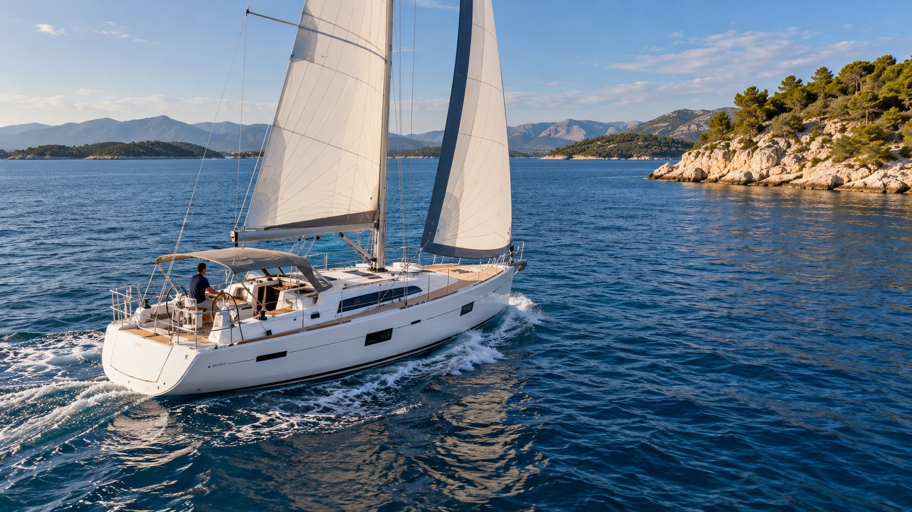

ADVENTURE HORIZONS / SECOND SHORE / ARTICLE 01
Чартерная иллюзия: яхты работают, а платит владелец

История о сильном желании иметь собственные яхты, первоначальном взносе около 30%, надежде на самофинансирование через чартер и цене недостаточного финансового резерва.
Когда всё выглядело логично
Очень хотелось купить яхту. Очень. Не просто время от времени брать лодку в чартер, а иметь собственное судно, за которое отвечаешь сам и на котором можешь строить свои планы.
Однако денег на покупку яхты за полную стоимость у меня изначально не было. И тут - появилась возможность, которую было трудно не рассматривать всерьёз: купить сразу две яхты, внеся первоначально около 30% стоимости, причем и их не сразу, а частями - а остальное выплачивать через лизинг.
Расчёт выглядел привлекательным: яхты будут работать в чартере, а доход от их эксплуатации обеспечит обслуживание лизинга и основных расходов. Фактически я рассчитывал на модель, близкую к самофинансированию.
Именно эта возможность и определила решение. Я получил доступ к двум серьёзным морским активам, не располагая капиталом для их полной покупки. Тогда это казалось способом превратить сильное желание выйти в море на собственной яхте в реальный проект.
У меня две парусные яхты — EVA и DIANA. Обе ELAN Impression 45.1, 2020 года постройки. Обе приобретены в лизинг и переданы в чартерную эксплуатацию в Хорватии.
Чартерная занимается рекламой, бронированиями, клиентами, подготовкой яхт к выходу, техническим обслуживанием. Яхты работают, приносят доход, а владелец получает свою долю выручки.
При этом у меня остаётся возможность пользоваться собственными лодками.
Всё выглядит вполне убедительно. Особенно в рекламных предложениях о покупке яхты с передачей её в чартерное управление.
Но между красивой финансовой моделью и реальной эксплуатацией существует существенная разница.
И я узнал об этой разнице на собственном опыте.
В 2023 году первоначальная схема впервые перестала выполнять свою главную задачу: чартерных поступлений не хватило для финансовой самостоятельности проекта. Ненамного. Всего-то на 2 000 евро. Мелочь, пустяк, подумал я, заходя в 2024 год.
Скажите, какое самое страшное слово в ядерной физике? Правильно – «Упс….»
2024 год мне обошелся уже в 23 тысячи дополнительного финансирования. Ладно, подумал я, сжав зубы. Продавать ничего не буду – да и продажа яхты – это не совсем быстрый процесс, плюс выехать никуда не могу – работа.
В 2025 год я уже вступал с нехорошими ожиданиями – лодки постепенно превратились в постоянный потребитель собственных денег. 27 тысяч. Правильно – «Упс….»
Важной причиной были внешние потрясения, начавшиеся в 2022 году, и последовавшие изменения рынка. Их конкретный масштаб и последствия я не мог надёжно предсказать на своём уровне информации. В экономическом смысле это был шок, близкий к форс-мажору.
При этом мой главный просчёт был не в отсутствии дара предвидения. Он состоял в недостаточной финансовой прочности самого проекта. Я приобрёл две яхты, не имея достаточного собственного капитала и резерва, чтобы долго выдерживать ситуацию, когда чартер перестаёт оплачивать обязательства – при лизинговой модели малейший внешний фактор – ну, например чемпионат мира по футболу уже вносил значительные коррективы в модель.
Черт, о чем приходилось думать – сколько футбольных фанатов не поехали в море, а рванули смотреть на футбол? Сам я не фанат этого вида спорта – от слова «совсем» - но наблюдать, как деньги, которые могли привезти мне, уплывают на трибуны стадионов – та еще история. Да и только ли в мундиале дело? Конечно же нет.
Две яхты. Сорок один чартер. Почти 184 тысячи евро
Теперь подробнее. Посмотрим на 2025 год.
EVA и DIANA получили в общей сложности 41 бронирование.
Суммарная стоимость чартеров по прайс-листу составила 183 958,57 евро.
Впечатляющая цифра.
Но есть один нюанс.
Начисленный мне доход как владельцу составил 73 257,14 евро, или приблизительно 39,8% от прайс-листовой стоимости бронирований.
Это не значит, что оставшиеся 60,2% забрала себе чартерная компания в качестве прибыли. Совсем нет. Чартерная в 2025 году убивалась, не покладая рук, чтобы сдать хоть как-то хоть что-то.
В отчётности существует специальная база распределения дохода — Income Division Base. Моя доля составляет 81,25% от этой базы, а не от прайс-листовой стоимости чартеров.
Между ними находятся скидки, условия продажи и другие элементы финансовой модели.
Поэтому я не собираюсь ни в чем обвинять чартерную компанию - в принципе, они свое дело сделали.
Меня интересует другой вопрос.
Сколько денег действительно остаётся владельцу после выполнения всех обязательств?
Доход — ещё не прибыль
У яхты нет выходных. К сожалению, к счастью – нет. Увы.
Даже когда она стоит у причала, деньги продолжают уходить.
Марина, страхование, техническое обслуживание, ремонт, подготовка к сезону, подъём и спуск на воду, бухгалтерия.
И, конечно, лизинг.
В моём случае ежемесячный лизинговый платёж составляет около 1 975 евро на каждую яхту.
Две лодки — почти 4 тысячи евро ежемесячно.
Эти деньги необходимо платить независимо от того, сколько чартерных недель удалось продать.
Причём яхта, работающая в чартере, постепенно расходует технический ресурс. Двигатель, паруса, такелаж, палубное оборудование, электрика, сантехника, интерьер — всё подвергается нагрузкам.
И далеко не каждый технический дефект становится очевидным сразу.
Иногда настоящий счёт за несколько лет эксплуатации приходит значительно позже.
Поэтому чартерный доход нельзя рассматривать отдельно от стоимости содержания яхты и восстановления её технического состояния.
Именно здесь первоначальная финансовая модель начала расходиться с реальностью.
2025 год: пришлось добавить почти 28 тысяч евро
В моей финансовой модели за 2025 год отражено около 73,9 тысячи евро поступлений по статье «Букинг».
При этом общие расходы оказались выше доступных средств.
В течение года мне пришлось дополнительно профинансировать деятельность компании на 27,7 тысяч евро из собственных денег.
Это не инвестиции в приобретение новых яхт.
Это не покупка дополнительного оборудования ради повышения комфорта.
Это деньги, необходимые для поддержания действующей модели эксплуатации и выполнения обязательств.
И даже после этого на конец 2025 года осталась задолженность перед чартерной компанией — 8,2 тысячи евро.
Здесь необходимо уточнение: эта задолженность представляет собой конечное сальдо взаиморасчётов, а не дополнительный убыток, который можно механически прибавить к перечисленным мной средствам – то есть чартерная оплачивала вперед часть расходов, пока могла. Это как симбиоз – она же зарабатывает на чартере, верно? А неподготовленные лодки – не сдашь. Выбора нет.
Но для понимания ситуации важна сама картина.
Сорок одно бронирование.
Почти 184 тысячи евро прайс-листовой стоимости чартеров.
Более 73 тысяч евро начисленного дохода владельца.
Почти 28 тысяч евро дополнительного финансирования из собственных средств.
И всё равно — задолженность перед оператором.
Яхты - работали.
Но не обеспечивали собственную финансовую самостоятельность.
2026 год: проблема стала заметнее
Следующий сезон оказался ещё сложнее.
Согласно отчётам чартерной компании, количество бронирований сократилось с 41 до 35.
Прайс-листовая стоимость чартеров снизилась с 183 958,57 до 142 080 евро.
Это падение почти на 23%.
Начисленный доход владельца уменьшился до 61 763,26 евро — на 15,7%.
При этом две яхты показали разную динамику.
У EVA количество бронирований осталось прежним — 19. Однако их общая прайс-листовая стоимость снизилась приблизительно на 17%.
У DIANA ситуация оказалась хуже. Количество бронирований сократилось с 22 до 16, а начисленный мне доход уменьшился почти на четверть. Здесь уже начала скапливаться общая техническая усталость лодок. У DIANA неожиданно отказала система кондиционирования – пока разбирались и меняли на другие лодки, часть моих бронирований слетела.
И вот теперь - получается, проблема не сводится к тому, что стало меньше клиентов.
Изменяется сама денежная отдача от чартерной эксплуатации.
Но обязательства владельца не уменьшаются вслед за рынком.
Марина не становится дешевле потому, что у яхты оказалось на пять бронирований меньше.
Страховка не уменьшается пропорционально снижению чартерного дохода.
Лизинговая компания не пересматривает график платежей только потому, что сезон оказался слабым.
А техническое состояние яхты вообще не зависит от того, сколько денег осталось у её владельца.
Почти 50 тысяч евро дополнительного финансирования
По состоянию на октябрь 2026 года моя обновлённая финансовая модель предусматривает 49,8 тысяч евро дополнительного финансирования со стороны собственника за весь год.
Причём в эту сумму входят 10 380 евро, которые я планирую внести в ноябре для оплаты дополнительных технических работ.
Это ещё не выполненное перечисление, а запланированная часть финансирования.
Даже с учётом этих средств и предусмотренных моделью обязательств прогнозная задолженность перед чартерной компанией на конец 2026 года составляет 3,3 тысячи евро.
Штатное техническое обслуживание следующего периода — 2027 года — в этот прогноз не включено.
Поэтому уменьшение задолженности по сравнению с концом 2025-го не означает, что яхты начали содержать себя самостоятельно.
Оно достигнуто в модели, предусматривающей ещё больший объём финансирования со стороны владельца.
И вот здесь возникает парадокс.
У меня две яхты, которые продолжают использоваться в коммерческой эксплуатации.
Они приносят доход.
Но чтобы они продолжали работать, и чтобы компания выполняла свои обязательства, мне приходится регулярно добавлять собственные деньги.
Это уже не та финансовая свобода, ради которой всё задумывалось.
Что было бы, если бы обе яхты были полностью оплачены?
Теперь взглянем по-другому. Дополнительные платежи за 2023–2026 годы: 2 тысячи + 23 тысячи + 27 тысяч + 50 (округлим) тысяч = около 102 тысяч евро. Последняя сумма включает и предстоящее финансирование до конца 2026 года, то есть это ещё не полностью состоявшиеся переводы. Прибавим к первоначальным взносам — ну почти одна целая лодка. Может, просто на мечту копить надо было? Упорно, целеустремлённо, на протяжении пяти долгих лет? Не думаю. Если задаться такой целью — деньги так же выведены из личного оборота, просто лежат, допустим, в банке. Вложить в другой бизнес? Так изначально такой кубышки не было. Ладно, можно рассуждать до бесконечности — просто в реалиях 2026 года иметь такое скопленное количество денег — и не иметь возможности купить никакой актив за рубежом (а в России, как мы знаем, лодки почти не продаются, или, если продаются, — то совсем уж категории «дрова» — мнение личное, обсуждаемо) — тоже так себе история.
История, конечно, не знает сослагательного наклонения, но – а что все-так было бы, если бы обе яхты были полностью оплачены? Этот вопрос позволяет отделить проблемы самого чартера от проблем способа финансирования покупки. Я взял финансовую модель 2025–2026 годов и убрал из неё только лизинговые платежи. Все остальные поступления и расходы оставил без изменений.
По отчётности лизинг обходится в 46,9 тысяч евро в год на две яхты. Без этого обязательства текущая картина была бы совершенно другой:
| Показатель | 2025 | 2026 |
|---|---|---|
| Денежный результат с лизингом, до взносов владельца | −€26 502,40 | −€44 881,86 |
| Лизинговые платежи | €46 920 | €46 920 |
| Денежный результат без лизинга | +€20 417,60 | +€2 038,14 |
В 2025 году эксплуатация двух полностью оплаченных яхт могла бы дать около 20,4 тысячи евро положительного денежного потока — до учёта стоимости вложенного при покупке капитала. В 2026 году положительный результат составил бы лишь около 2 тысяч евро.
Иными словами, лизинг оказался решающим фактором текущего денежного дефицита. Но даже без него в 2026 году запас устойчивости был бы минимальным: один существенный ремонт мог бы изменить знак результата.
Это сравнение не доказывает, что покупка яхт за полную стоимость была бы более выгодной инвестицией. Для такого вывода нужно учитывать цену двух судов, альтернативную доходность первоначального капитала, снижение рыночной стоимости яхт и будущие капитальные ремонты. Здесь я сравниваю только денежные потоки от эксплуатации.
И всё же вывод очевиден: бизнес с высокой долговой нагрузкой и недостаточным резервом особенно чувствителен к внешним потрясениям. Если не хватает собственного капитала и ликвидного резерва, даже работающий актив может превратиться в постоянную потребность в новых деньгах. Аксиома.
Значит ли это, что чартер — плохой бизнес?
Нет.
Я не собираюсь утверждать, что чартерная эксплуатация яхт обязательно убыточна.
У разных владельцев разные условия приобретения судов, разные договоры с операторами, разная загрузка и структура расходов.
Яхта, которая полностью оплачена и не обременена лизингом, находится в совершенно иной финансовой ситуации.
Кроме того, экономика чартерного оператора и экономика владельца — это две разные модели.
Чартерная компания оказывает услуги, управляет эксплуатацией, взаимодействует с клиентами и несёт собственные расходы.
Я не считаю правильным автоматически переносить проблемы моей финансовой модели на весь чартерный рынок.
Но именно моя модель — две яхты в лизинге, переданные оператору, — постепенно перестала отвечать первоначальной задаче.
Вместо того чтобы компенсировать расходы на владение, как это было до переломного 2023 года, она стала регулярно требовать дополнительного финансирования.
И это факт, от которого уже нельзя отмахнуться.
Кто на самом деле управляет твоей яхтой?
Есть ещё одна сторона вопроса.
Когда яхта находится в чартерном управлении, собственник передаёт оператору значительную часть повседневных решений.
Календарь эксплуатации, подготовка к сезону, взаимодействие с клиентами, организация технического обслуживания — всё встроено в систему чартерной компании.
Это удобно.
Но удобство имеет обратную сторону.
Собственник сохраняет финансовую ответственность за актив, однако не всегда непосредственно контролирует его эксплуатацию, технические решения и формирование расходов.
При этом именно ему в конечном счёте принадлежит яхта со всеми последствиями многолетнего использования.
Можно иметь исправно оформленные документы, регулярно оплачивать счета и получать отчёты.
Но всё равно недостаточно понимать реальное состояние собственного судна.
И однажды обнаружить, что возвращение яхты к надёжной самостоятельной эксплуатации потребует серьёзных работ.
Для меня этот вопрос постепенно стал не менее важным, чем финансовая отчётность.
Потому что яхта — это не только стоимость приобретения, рыночная цена и сумма чартерных поступлений.
Это ещё и техническая система, за состояние которой кто-то должен отвечать.
В какой момент нужно остановиться?
Сначала я задавал себе вопрос: сколько могут заработать две яхты в чартере?
Затем вопрос изменился: почему при наличии дохода мне приходится ежегодно добавлять всё больше собственных денег?
И наконец появился третий вопрос.
Зачем мне продолжать финансировать модель, которой я не управляю в полной мере?
Я мог бы оставить всё как есть.
Продолжать оплачивать лизинг, содержание, ремонты и надеяться на улучшение чартерного рынка.
Возможно, в какой-то момент ситуация действительно улучшится – но на это в текущих внешних условиях точно никаких денег не хватит.
Но для меня такой подход больше не выглядит достаточным.
У меня есть две яхты. Есть многолетний опыт их эксплуатации. Есть технические знания, морская практика и понимание того, какие решения необходимо принимать самостоятельно.
И я начал рассматривать другие варианты.
Выкупить одну яхту из лизинга. Продать одну из лодок. Провести необходимый рефит. Изменить базу эксплуатации.
Использовать яхту не просто как объект чартерного бизнеса, а как инструмент собственной профессиональной деятельности.
При этом ни один из вариантов не гарантирует экономического успеха – ведь при этих моих планах, я, может статься, совершаю еще какую-то ошибку, правильно?
Каждый вариант необходимо рассчитывать.
Но появляется принципиальное отличие - я сам определяю, что собираюсь делать, за что платить и какой результат хочу получить.
Мой второй берег
Владение двумя яхтами дало мне гораздо больше, чем морские мили и красивые фотографии.
Оно научило смотреть на яхтинг как на систему технических, финансовых и человеческих решений.
Теперь я гораздо лучше понимаю, что покупка яхты сама по себе ещё не создаёт свободу.
Свобода начинается там, где ты понимаешь свои обязательства, контролируешь риски и способен самостоятельно принимать решения.
Поэтому я не считаю прошедшие годы потерянными. И деньги — тоже. В конечном итоге яхта — реальный актив, за который всё равно нужно заплатить. Другое дело, что цена покупки, стоимость владения и сумма, которую впоследствии можно выручить при продаже, — это три разные величины.
Эти годы дали мне опыт, который невозможно получить только на учебных курсах или из рекламных материалов.
Но теперь я хочу использовать этот опыт иначе.
Не рассчитывать исключительно на то, что кто-то другой организует работу моих яхт и обеспечит мне доход.
А зарабатывать собственными знаниями, практикой и умением принимать решения.
Потому что за годы в море я окончательно убедился в одной вещи.
Для того, чтобы выйти в море — нужны права. Для того, чтобы вернуться — нужны знания.
И именно эти знания должны стать основой следующего этапа.
Моего второго берега.
Следующая статья — ARTICLE 02: LEASING REALITY
Лизинг позволил мне приобрести две яхты. Но вместе с ними я приобрёл долгосрочные обязательства, которые не исчезают даже тогда, когда яхты перестают зарабатывать. Что в действительности стоит за таким способом владения — и что изменится после выкупа?
ADVENTURE HORIZONS · SECOND SHORE · Октябрь 2026 года